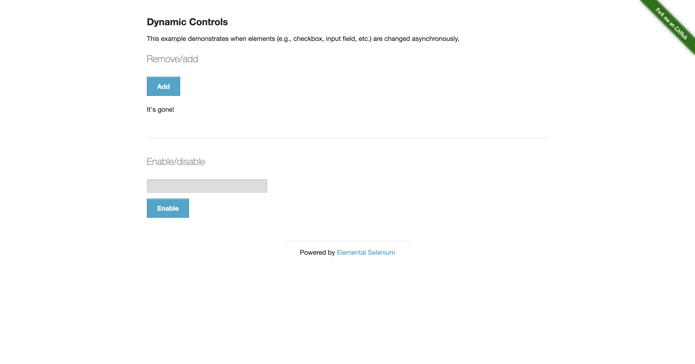
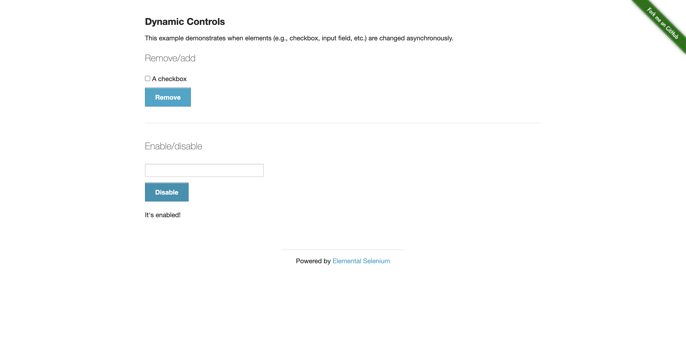
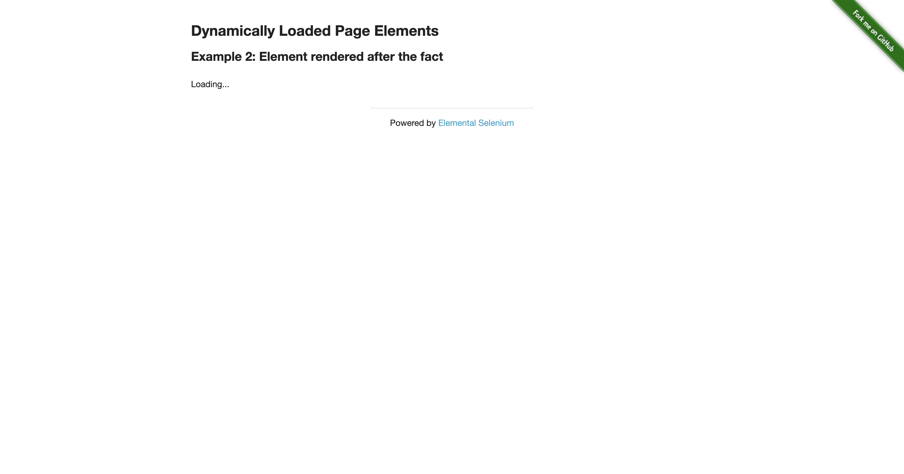

-
com.seleniumcraft.demo.FlakyBasicSeleniumTest :: testStaleElementException_WillFail
01:43:14 / 00:00:09:983 Fail
com.seleniumcraft.demo.FlakyBasicSeleniumTest :: testStaleElementException_WillFail
03.12.2026 01:43:14 03.12.2026 01:43:24 00:00:09:983 · #test-id=1
Status Timestamp Details Info 01:43:14 Test started: testStaleElementException_WillFail Info 01:43:14 Demonstrating StaleElementReferenceException issue Warning 01:43:14 This test is EXPECTED to fail - showcasing traditional Selenium weakness Info 01:43:20 Stored reference to checkbox element Info 01:43:21 Clicked 'Remove' button - DOM will be modified Info 01:43:24 Attempting to check if original element is displayed... Info 01:43:24 ✓ StaleElementReferenceException thrown as expected Fail 01:43:24 Traditional Selenium cannot recover from stale element references! Fail 01:43:24 Test FAILED: testStaleElementException_WillFail Fail 01:43:24 -
com.seleniumcraft.demo.FlakyBasicSeleniumTest :: testDynamicLoadingRaceCondition_WillFail
01:43:26 / 00:00:03:299 Fail
com.seleniumcraft.demo.FlakyBasicSeleniumTest :: testDynamicLoadingRaceCondition_WillFail
03.12.2026 01:43:26 03.12.2026 01:43:29 00:00:03:299 · #test-id=2
Status Timestamp Details Info 01:43:26 Test started: testDynamicLoadingRaceCondition_WillFail Info 01:43:26 Demonstrating race condition with dynamic content Warning 01:43:26 This test is EXPECTED to fail - showcasing timing issues Info 01:43:29 Clicked 'Start' button - content loading... Info 01:43:29 ✓ NoSuchElementException thrown as expected Fail 01:43:29 Traditional Selenium failed due to race condition! Fail 01:43:29 Test FAILED: testDynamicLoadingRaceCondition_WillFail Fail 01:43:29 -
com.seleniumcraft.demo.FlakyBasicSeleniumTest :: testDisappearingElement_WillFail
01:43:31 / 00:00:06:532 Fail
com.seleniumcraft.demo.FlakyBasicSeleniumTest :: testDisappearingElement_WillFail
03.12.2026 01:43:31 03.12.2026 01:43:37 00:00:06:532 · #test-id=3Status Timestamp Details Info 01:43:31 Test started: testDisappearingElement_WillFail Info 01:43:31 Demonstrating issue with briefly appearing elements Warning 01:43:31 This test showcases unreliable element interactions Info 01:43:34 Loading indicator text: Wait for it... Fail 01:43:37 Test FAILED: testDisappearingElement_WillFail Fail 01:43:37 -
com.seleniumcraft.demo.FlakyBasicSeleniumTest :: testRapidClicksStaleElement_WillFail
01:43:39 / 00:00:05:140 Pass
com.seleniumcraft.demo.FlakyBasicSeleniumTest :: testRapidClicksStaleElement_WillFail
03.12.2026 01:43:39 03.12.2026 01:43:44 00:00:05:140 · #test-id=4Status Timestamp Details Info 01:43:39 Test started: testRapidClicksStaleElement_WillFail Info 01:43:39 Demonstrating stale element issues with rapid interactions Info 01:43:43 Performing rapid add/delete operations... Info 01:43:43 Found 5 delete buttons Pass 01:43:44 All buttons deleted successfully Pass 01:43:44 Test PASSED: testRapidClicksStaleElement_WillFail -
com.seleniumcraft.demo.FlakyBasicSeleniumTest :: testWithThreadSleep_SlowAndFragile
01:43:45 / 00:00:09:567 Warning
com.seleniumcraft.demo.FlakyBasicSeleniumTest :: testWithThreadSleep_SlowAndFragile
03.12.2026 01:43:45 03.12.2026 01:43:55 00:00:09:567 · #test-id=5Status Timestamp Details Info 01:43:45 Test started: testWithThreadSleep_SlowAndFragile Info 01:43:45 Demonstrating Thread.sleep anti-pattern Warning 01:43:45 This test PASSES but is SLOW and FRAGILE Info 01:43:49 Using Thread.sleep(6000) - wasteful and unreliable! Warning 01:43:55 Test passed but took 9562ms due to Thread.sleep Info 01:43:55 SeleniumCraft would complete this in ~2-3 seconds with smart waits Pass 01:43:55 Test PASSED: testWithThreadSleep_SlowAndFragile -
com.seleniumcraft.demo.SeleniumCraftTest :: testCheckboxesWithSeleniumCraft
01:43:59 / 00:00:00:393 Pass
com.seleniumcraft.demo.SeleniumCraftTest :: testCheckboxesWithSeleniumCraft
03.12.2026 01:43:59 03.12.2026 01:43:59 00:00:00:393 · #test-id=6Status Timestamp Details Info 01:43:59 Test started: testCheckboxesWithSeleniumCraft Pass 01:43:59 Test PASSED: testCheckboxesWithSeleniumCraft -
com.seleniumcraft.demo.SeleniumCraftTest :: testDropdownWithSeleniumCraft
01:44:04 / 00:00:00:390 Pass
com.seleniumcraft.demo.SeleniumCraftTest :: testDropdownWithSeleniumCraft
03.12.2026 01:44:04 03.12.2026 01:44:05 00:00:00:390 · #test-id=7Status Timestamp Details Info 01:44:04 Test started: testDropdownWithSeleniumCraft Pass 01:44:05 Test PASSED: testDropdownWithSeleniumCraft -
com.seleniumcraft.demo.SeleniumCraftTest :: testDynamicLoadingWithSeleniumCraft
01:44:09 / 00:00:05:435 Pass
com.seleniumcraft.demo.SeleniumCraftTest :: testDynamicLoadingWithSeleniumCraft
03.12.2026 01:44:09 03.12.2026 01:44:14 00:00:05:435 · #test-id=8Status Timestamp Details Info 01:44:09 Test started: testDynamicLoadingWithSeleniumCraft Pass 01:44:14 Test PASSED: testDynamicLoadingWithSeleniumCraft -
com.seleniumcraft.demo.SeleniumCraftTest :: testIframeWithSeleniumCraft
01:44:21 / 00:00:04:359 Pass
com.seleniumcraft.demo.SeleniumCraftTest :: testIframeWithSeleniumCraft
03.12.2026 01:44:21 03.12.2026 01:44:25 00:00:04:359 · #test-id=9Status Timestamp Details Info 01:44:21 Test started: testIframeWithSeleniumCraft Pass 01:44:25 Test PASSED: testIframeWithSeleniumCraft -
com.seleniumcraft.demo.SeleniumCraftTest :: testLoginFormWithSeleniumCraft
01:44:33 / 00:00:02:595 Pass
com.seleniumcraft.demo.SeleniumCraftTest :: testLoginFormWithSeleniumCraft
03.12.2026 01:44:33 03.12.2026 01:44:35 00:00:02:595 · #test-id=10Status Timestamp Details Info 01:44:33 Test started: testLoginFormWithSeleniumCraft Pass 01:44:34 Test PASSED: testLoginFormWithSeleniumCraft Info 01:44:35 Browser initialized - Traditional Selenium approach -
com.seleniumcraft.demo.FlakyBasicSeleniumTest :: testDisappearingElement_WillFail
01:44:35 / 00:00:07:500 Fail
com.seleniumcraft.demo.FlakyBasicSeleniumTest :: testDisappearingElement_WillFail
03.12.2026 01:44:35 03.12.2026 01:44:43 00:00:07:500 · #test-id=11
Status Timestamp Details Info 01:44:35 Test started: testDisappearingElement_WillFail Info 01:44:35 Demonstrating issue with briefly appearing elements Warning 01:44:35 This test showcases unreliable element interactions Info 01:44:39 Loading indicator text: Wait for it... Fail 01:44:43 Test FAILED: testDisappearingElement_WillFail Fail 01:44:43 -
com.seleniumcraft.demo.FlakyBasicSeleniumTest :: testDynamicLoadingRaceCondition_WillFail
01:44:44 / 00:00:03:623 Fail
com.seleniumcraft.demo.FlakyBasicSeleniumTest :: testDynamicLoadingRaceCondition_WillFail
03.12.2026 01:44:44 03.12.2026 01:44:48 00:00:03:623 · #test-id=12
Status Timestamp Details Info 01:44:44 Test started: testDynamicLoadingRaceCondition_WillFail Info 01:44:44 Demonstrating race condition with dynamic content Warning 01:44:44 This test is EXPECTED to fail - showcasing timing issues Info 01:44:48 Clicked 'Start' button - content loading... Info 01:44:48 ✓ NoSuchElementException thrown as expected Fail 01:44:48 Traditional Selenium failed due to race condition! Fail 01:44:48 Test FAILED: testDynamicLoadingRaceCondition_WillFail Fail 01:44:48 -
com.seleniumcraft.demo.FlakyBasicSeleniumTest :: testRapidClicksStaleElement_WillFail
01:44:49 / 00:00:04:880 Pass
com.seleniumcraft.demo.FlakyBasicSeleniumTest :: testRapidClicksStaleElement_WillFail
03.12.2026 01:44:49 03.12.2026 01:44:54 00:00:04:880 · #test-id=13Status Timestamp Details Info 01:44:49 Test started: testRapidClicksStaleElement_WillFail Info 01:44:49 Demonstrating stale element issues with rapid interactions Info 01:44:53 Performing rapid add/delete operations... Info 01:44:54 Found 5 delete buttons Pass 01:44:54 All buttons deleted successfully Pass 01:44:54 Test PASSED: testRapidClicksStaleElement_WillFail -
com.seleniumcraft.demo.FlakyBasicSeleniumTest :: testStaleElementException_WillFail
01:44:55 / 00:00:07:775 Fail
com.seleniumcraft.demo.FlakyBasicSeleniumTest :: testStaleElementException_WillFail
03.12.2026 01:44:55 03.12.2026 01:45:03 00:00:07:775 · #test-id=14
Status Timestamp Details Info 01:44:55 Test started: testStaleElementException_WillFail Info 01:44:55 Demonstrating StaleElementReferenceException issue Warning 01:44:55 This test is EXPECTED to fail - showcasing traditional Selenium weakness Info 01:45:00 Stored reference to checkbox element Info 01:45:00 Clicked 'Remove' button - DOM will be modified Info 01:45:03 Attempting to check if original element is displayed... Info 01:45:03 ✓ StaleElementReferenceException thrown as expected Fail 01:45:03 Traditional Selenium cannot recover from stale element references! Fail 01:45:03 Test FAILED: testStaleElementException_WillFail Fail 01:45:03 -
com.seleniumcraft.demo.FlakyBasicSeleniumTest :: testWithThreadSleep_SlowAndFragile
01:45:04 / 00:00:08:757 Warning
com.seleniumcraft.demo.FlakyBasicSeleniumTest :: testWithThreadSleep_SlowAndFragile
03.12.2026 01:45:04 03.12.2026 01:45:13 00:00:08:757 · #test-id=15Status Timestamp Details Info 01:45:04 Test started: testWithThreadSleep_SlowAndFragile Info 01:45:04 Demonstrating Thread.sleep anti-pattern Warning 01:45:04 This test PASSES but is SLOW and FRAGILE Info 01:45:07 Using Thread.sleep(6000) - wasteful and unreliable! Warning 01:45:13 Test passed but took 8756ms due to Thread.sleep Info 01:45:13 SeleniumCraft would complete this in ~2-3 seconds with smart waits Pass 01:45:13 Test PASSED: testWithThreadSleep_SlowAndFragile
-
org.openqa.selenium.StaleElementReferenceException
2 tests
org.openqa.selenium.StaleElementReferenceException
2 failedStatus Timestamp TestName Fail 01:43:14 am com.seleniumcraft.demo.FlakyBasicSeleniumTest :: testStaleElementException_WillFail Fail 01:44:55 am com.seleniumcraft.demo.FlakyBasicSeleniumTest :: testStaleElementException_WillFail -
java.lang.AssertionError
2 tests
java.lang.AssertionError
2 failedStatus Timestamp TestName Fail 01:43:31 am com.seleniumcraft.demo.FlakyBasicSeleniumTest :: testDisappearingElement_WillFail Fail 01:44:35 am com.seleniumcraft.demo.FlakyBasicSeleniumTest :: testDisappearingElement_WillFail -
org.openqa.selenium.NoSuchElementException
2 tests
org.openqa.selenium.NoSuchElementException
2 failedStatus Timestamp TestName Fail 01:43:26 am com.seleniumcraft.demo.FlakyBasicSeleniumTest :: testDynamicLoadingRaceCondition_WillFail Fail 01:44:44 am com.seleniumcraft.demo.FlakyBasicSeleniumTest :: testDynamicLoadingRaceCondition_WillFail
Started
2026-03-12 01:43:14
Ended
2026-03-12 01:45:13
Tests Passed
7
Tests Failed
6
Tests
Log events
Timeline
System/Environment
| Name | Value |
|---|---|
| OS | Mac OS X |
| Java Version | 24.0.1 |
| Framework | SeleniumCraft |